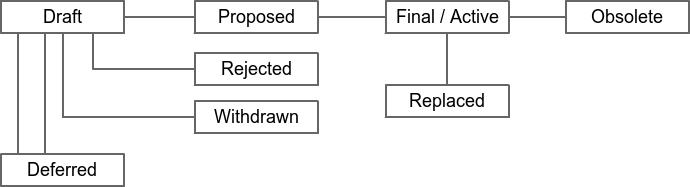

BIP: 2 Title: BIP process, revised Authors: Luke Dashjr <luke+bip@dashjr.org> Status: Closed Type: Process Assigned: 2016-02-03 License: BSD-2-Clause OR OPUBL-1.0 Replaces: 1 Proposed-Replacement: 3
Abstract
A Bitcoin Improvement Proposal (BIP) is a design document providing information to the Bitcoin community, or describing a new feature for Bitcoin or its processes or environment. The BIP should provide a concise technical specification of the feature and a rationale for the feature.
We intend BIPs to be the primary mechanisms for proposing new features, for collecting community input on an issue, and for documenting the design decisions that have gone into Bitcoin. The BIP author is responsible for building consensus within the community and documenting dissenting opinions.
Because the BIPs are maintained as text files in a versioned repository, their revision history is the historical record of the feature proposal.
This particular BIP replaces BIP 1 with a more well-defined and clear process.
Copyright
This BIP is dual-licensed under the Open Publication License and BSD 2-clause license.
BIP workflow
The BIP process begins with a new idea for Bitcoin. Each potential BIP must have a champion -- someone who writes the BIP using the style and format described below, shepherds the discussions in the appropriate forums, and attempts to build community consensus around the idea. The BIP champion (a.k.a. Author) should first attempt to ascertain whether the idea is BIP-able. Small enhancements or patches to a particular piece of software often don't require standardisation between multiple projects; these don't need a BIP and should be injected into the relevant project-specific development workflow with a patch submission to the applicable issue tracker. Additionally, many ideas have been brought forward for changing Bitcoin that have been rejected for various reasons. The first step should be to search past discussions to see if an idea has been considered before, and if so, what issues arose in its progression. After investigating past work, the best way to proceed is by posting about the new idea to the Bitcoin development mailing list.
Vetting an idea publicly before going as far as writing a BIP is meant to save both the potential author and the wider community time. Asking the Bitcoin community first if an idea is original helps prevent too much time being spent on something that is guaranteed to be rejected based on prior discussions (searching the internet does not always do the trick). It also helps to make sure the idea is applicable to the entire community and not just the author. Just because an idea sounds good to the author does not mean it will work for most people in most areas where Bitcoin is used.
Once the champion has asked the Bitcoin community as to whether an idea has any chance of acceptance, a draft BIP should be presented to the Bitcoin development mailing list. This gives the author a chance to flesh out the draft BIP to make it properly formatted, of high quality, and to address additional concerns about the proposal. Following a discussion, the proposal should be submitted to the BIPs git repository as a pull request. This draft must be written in BIP style as described below, and named with an alias such as "bip-johndoe-infinitebitcoins" until an editor has assigned it a BIP number (authors MUST NOT self-assign BIP numbers).
BIP authors are responsible for collecting community feedback on both the initial idea and the BIP before submitting it for review. However, wherever possible, long open-ended discussions on public mailing lists should be avoided. Strategies to keep the discussions efficient include: setting up a separate SIG mailing list for the topic, having the BIP author accept private comments in the early design phases, setting up a wiki page or git repository, etc. BIP authors should use their discretion here.
It is highly recommended that a single BIP contain a single key proposal or new idea. The more focused the BIP, the more successful it tends to be. If in doubt, split your BIP into several well-focused ones.
When the BIP draft is complete, a BIP editor will assign the BIP a number, label it as Standards Track, Informational, or Process, and merge the pull request to the BIPs git repository. The BIP editors will not unreasonably reject a BIP. Reasons for rejecting BIPs include duplication of effort, disregard for formatting rules, being too unfocused or too broad, being technically unsound, not providing proper motivation or addressing backwards compatibility, or not in keeping with the Bitcoin philosophy. For a BIP to be accepted it must meet certain minimum criteria. It must be a clear and complete description of the proposed enhancement. The enhancement must represent a net improvement. The proposed implementation, if applicable, must be solid and must not complicate the protocol unduly.
The BIP author may update the draft as necessary in the git repository. Updates to drafts should also be submitted by the author as pull requests.
Transferring BIP Ownership
It occasionally becomes necessary to transfer ownership of BIPs to a new champion. In general, we'd like to retain the original author as a co-author of the transferred BIP, but that's really up to the original author. A good reason to transfer ownership is because the original author no longer has the time or interest in updating it or following through with the BIP process, or has fallen off the face of the 'net (i.e. is unreachable or not responding to email). A bad reason to transfer ownership is because you don't agree with the direction of the BIP. We try to build consensus around a BIP, but if that's not possible, you can always submit a competing BIP.
If you are interested in assuming ownership of a BIP, send a message asking to take over, addressed to both the original author and the BIP editors. If the original author doesn't respond to email in a timely manner, the BIP editors will make a unilateral decision (it's not like such decisions can't be reversed :).
BIP Editors
The current BIP editors are:
- Bryan Bishop (kanzure@gmail.com)
- Jon Atack (jon@atack.com)
- Luke Dashjr (luke_bipeditor@dashjr.org)
- Mark "Murch" Erhardt (murch@murch.one)
- Olaoluwa Osuntokun (laolu32@gmail.com)
- Ruben Somsen (rsomsen@gmail.com)
BIP Editor Responsibilities & Workflow
The BIP editors subscribe to the Bitcoin development mailing list. Off-list BIP-related correspondence should be sent (or CC'd) to the BIP editors.
For each new BIP that comes in an editor does the following:
- Read the BIP to check if it is ready: sound and complete. The ideas must make technical sense, even if they don't seem likely to be accepted.
- The title should accurately describe the content.
- The BIP draft must have been sent to the Bitcoin development mailing list for discussion.
- Motivation and backward compatibility (when applicable) must be addressed.
- The defined Layer header must be correctly assigned for the given specification.
- Licensing terms must be acceptable for BIPs.
If the BIP isn't ready, the editor will send it back to the author for revision, with specific instructions.
Once the BIP is ready for the repository it should be submitted as a "pull request" to the BIPs git repository where it may get further feedback.
The BIP editor will:
- Assign a BIP number in the pull request.
- Merge the pull request when it is ready.
- List the BIP in README.mediawiki
The BIP editors are intended to fulfill administrative and editorial responsibilities. The BIP editors monitor BIP changes, and update BIP headers as appropriate.
BIP editors may also, at their option, unilaterally make and merge strictly-editorial changes to BIPs, such as correcting misspellings, fixing broken links, etc.
BIP format and structure
Specification
BIPs should be written in mediawiki or markdown format.
Each BIP should have the following parts:
- Preamble -- Headers containing metadata about the BIP (see below).
- Abstract -- A short (~200 word) description of the technical issue being addressed.
- Copyright -- The BIP must be explicitly licensed under acceptable copyright terms (see below).
- Specification -- The technical specification should describe the syntax and semantics of any new feature. The specification should be detailed enough to allow competing, interoperable implementations for any of the current Bitcoin platforms.
- Motivation -- The motivation is critical for BIPs that want to change the Bitcoin protocol. It should clearly explain why the existing protocol is inadequate to address the problem that the BIP solves.
- Rationale -- The rationale fleshes out the specification by describing what motivated the design and why particular design decisions were made. It should describe alternate designs that were considered and related work. The rationale should provide evidence of consensus within the community and discuss important objections or concerns raised during discussion.
- Backwards compatibility -- All BIPs that introduce backwards incompatibilities must include a section describing these incompatibilities and their severity. The BIP must explain how the author proposes to deal with these incompatibilities.
- Reference implementation -- The reference implementation must be completed before any BIP is given status "Final", but it need not be completed before the BIP is accepted. It is better to finish the specification and rationale first and reach consensus on it before writing code. The final implementation must include test code and documentation appropriate for the Bitcoin protocol.
BIP header preamble
Each BIP must begin with an RFC 822 style header preamble. The headers must appear in the following order. Headers marked with "*" are optional and are described below. All other headers are required.
BIP: <BIP number, or "?" before being assigned>
* Layer: <Consensus (soft fork) | Consensus (hard fork) | Peer Services | API/RPC | Applications>
Title: <BIP title; maximum 44 characters>
Author: <list of authors' real names and email addrs>
* Discussions-To: <email address>
* Comments-Summary: <summary tone>
Comments-URI: <links to wiki page for comments>
Status: <Draft | Active | Proposed | Deferred | Rejected |
Withdrawn | Final | Replaced | Obsolete>
Type: <Standards Track | Informational | Process>
Created: <date created on, in ISO 8601 (yyyy-mm-dd) format>
License: <abbreviation for approved license(s)>
* License-Code: <abbreviation for code under different approved license(s)>
* Post-History: <dates of postings to bitcoin mailing list, or link to thread in mailing list archive>
* Requires: <BIP number(s)>
* Replaces: <BIP number>
* Superseded-By: <BIP number>
The Layer header (only for Standards Track BIPs) documents which layer of Bitcoin the BIP applies to. See BIP 123 for definitions of the various BIP layers. Activation of this BIP implies activation of BIP 123.
The Author header lists the names and email addresses of all the authors/owners of the BIP. The format of the Author header value must be
Random J. User <address@dom.ain>
If there are multiple authors, each should be on a separate line following RFC 2822 continuation line conventions.
While a BIP is in private discussions (usually during the initial Draft phase), a Discussions-To header will indicate the mailing list or URL where the BIP is being discussed. No Discussions-To header is necessary if the BIP is being discussed privately with the author, or on the bitcoin email mailing lists.
The Type header specifies the type of BIP: Standards Track, Informational, or Process.
The Created header records the date that the BIP was assigned a number, while Post-History is used to record when new versions of the BIP are posted to bitcoin mailing lists. Dates should be in yyyy-mm-dd format, e.g. 2001-08-14. Post-History is permitted to be a link to a specific thread in a mailing list archive.
BIPs may have a Requires header, indicating the BIP numbers that this BIP depends on.
BIPs may also have a Superseded-By header indicating that a BIP has been rendered obsolete by a later document; the value is the number of the BIP that replaces the current document. The newer BIP must have a Replaces header containing the number of the BIP that it rendered obsolete.
Auxiliary Files
BIPs may include auxiliary files such as diagrams. Auxiliary files should be included in a subdirectory for that BIP, or must be named BIP-XXXX-Y.ext, where "XXXX" is the BIP number, "Y" is a serial number (starting at 1), and "ext" is replaced by the actual file extension (e.g. "png").
BIP types
There are three kinds of BIP:
- A Standards Track BIP describes any change that affects most or all Bitcoin implementations, such as a change to the network protocol, a change in block or transaction validity rules, or any change or addition that affects the interoperability of applications using Bitcoin. Standards Track BIPs consist of two parts, a design document and a reference implementation.
- An Informational BIP describes a Bitcoin design issue, or provides general guidelines or information to the Bitcoin community, but does not propose a new feature. Informational BIPs do not necessarily represent a Bitcoin community consensus or recommendation, so users and implementers are free to ignore Informational BIPs or follow their advice.
- A Process BIP describes a process surrounding Bitcoin, or proposes a change to (or an event in) a process. Process BIPs are like Standards Track BIPs but apply to areas other than the Bitcoin protocol itself. They may propose an implementation, but not to Bitcoin's codebase; they often require community consensus; unlike Informational BIPs, they are more than recommendations, and users are typically not free to ignore them. Examples include procedures, guidelines, changes to the decision-making process, and changes to the tools or environment used in Bitcoin development. Any meta-BIP is also considered a Process BIP.
BIP status field
Specification
The typical paths of the status of BIPs are as follows:

Champions of a BIP may decide on their own to change the status between Draft, Deferred, or Withdrawn. A BIP editor may also change the status to Deferred when no progress is being made on the BIP.
A BIP may only change status from Draft (or Rejected) to Proposed, when the author deems it is complete, has a working implementation (where applicable), and has community plans to progress it to the Final status.
BIPs should be changed from Draft or Proposed status, to Rejected status, upon request by any person, if they have not made progress in three years. Such a BIP may be changed to Draft status if the champion provides revisions that meaningfully address public criticism of the proposal, or to Proposed status if it meets the criteria required as described in the previous paragraph.
A Proposed BIP may progress to Final only when specific criteria reflecting real-world adoption has occurred. This is different for each BIP depending on the nature of its proposed changes, which will be expanded on below. Evaluation of this status change should be objectively verifiable, and/or be discussed on the development mailing list.
When a Final BIP is no longer relevant, its status may be changed to Replaced or Obsolete (which is equivalent to Replaced). This change must also be objectively verifiable and/or discussed.
A process BIP may change status from Draft to Active when it achieves rough consensus on the mailing list. Such a proposal is said to have rough consensus if it has been open to discussion on the development mailing list for at least one month, and no person maintains any unaddressed substantiated objections to it. Addressed or obstructive objections may be ignored/overruled by general agreement that they have been sufficiently addressed, but clear reasoning must be given in such circumstances.
Progression to Final status
A soft-fork BIP strictly requires a clear miner majority expressed by blockchain voting (eg, using BIP 9). In addition, if the economy seems willing to make a "no confidence" hard-fork (such as a change in proof-of-work algorithm), the soft-fork does not become Final for as long as such a hard-fork might have majority support, or at most three months. Soft-fork BIPs may also set additional requirements for their adoption. Because of the possibility of changes to miner dynamics, especially in light of delegated voting (mining pools), it is highly recommended that a supermajority vote around 95% be required by the BIP itself, unless rationale is given for a lower threshold.
A hard-fork BIP requires adoption from the entire Bitcoin economy, particularly including those selling desirable goods and services in exchange for bitcoin payments, as well as Bitcoin holders who wish to spend or would spend their bitcoins (including selling for other currencies) differently in the event of such a hard-fork. Adoption must be expressed by de facto usage of the hard-fork in practice (ie, not merely expressing public support, although that is a good step to establish agreement before adoption of the BIP). This economic adoption cannot be established merely by a super-majority, except by literally forcing the minority to accept the hard-fork (whether this is viable or not is outside the scope of this document).
Peer services BIPs should be observed to be adopted by at least 1% of public listening nodes for one month.
API/RPC and application layer BIPs must be implemented by at least two independent and compatible software applications.
Software authors are encouraged to publish summaries of what BIPs their software supports to aid in verification of status changes. Good examples of this at the time of writing this BIP, can be observed in Bitcoin Core's doc/bips.md file as well as Bitcoin Wallet for Android's wallet/README.specs.md file.
These criteria are considered objective ways to observe the de facto adoption of the BIP, and are not to be used as reasons to oppose or reject a BIP. Should a BIP become actually and unambiguously adopted despite not meeting the criteria outlined here, it should still be updated to Final status.
Rationale
Why is this necessary at all?
- BIP 1 defines an ambiguous criteria for the Status field of BIPs, which is often a source of confusion. As a result, many BIPs with significant real-world use have been left as Draft or Proposed status longer than appropriate. By giving objective criteria to judge the progression of BIPs, this proposal aims to help keep the Status accurate and up-to-date.
How is the entire Bitcoin economy defined by people selling goods/services and holders?
- For Bitcoin to function as a currency, it must be accepted as payment. Bitcoins have no value if you cannot acquire anything in exchange for them. If everyone accepting such payments requires a particular set of consensus rules, "bitcoins" are de facto defined by that set of rules - this is already the case today. If those consensus rules are expected to broaden (as with a hard-fork), those merchants need to accept payments made under the new set of rules, or they will reject "bitcoins" as invalid. Holders are relevant to the degree in that they choose the merchants they wish to spend their bitcoins with, and could also as a whole decide to sell under one set of consensus rules or the other, thus flooding the market with bitcoins and crashing the price.
Why aren't <x> included in the economy?
- Some entities may, to some degree, also be involved in offering goods and/or services in exchange for bitcoins, thus in that capacity (but not their capacity as <x>) be involved in the economy.
- Miners are not included in the economy, because they merely *rely on* others to sell/spend their otherwise-worthless mined produce. Therefore, they must accept everyone else's direction in deciding the consensus rules.
- Exchanges are not included in the economy, because they merely provide services of connecting the merchants and users who wish to trade. Even if all exchanges were to defect from Bitcoin, those merchants and users can always trade directly and/or establish their own exchanges.
- Developers are not included in the economy, since they merely write code, and it is up to others to decide to use that code or not.
But they're doing something important and have invested a lot in Bitcoin! Shouldn't they be included in such an important decision?
- This BIP does not aim to address what "should" be the basis of decisions. Such a statement, no matter how perfect in its justification, would be futile without some way to force others to use it. The BIP process does not aim to be a kind of forceful "governance" of Bitcoin, merely to provide a collaborative repository for proposing and providing information on standards, which people may voluntarily adopt or not. It can only hope to achieve accuracy in regard to the "Status" field by striving to reflect the reality of *how things actually are*, rather than *how they should be*.
What if a single merchant wishes to block a hard-fork?
- This BIP addresses only the progression of the BIP Status field, not the deployment of the hard-fork (or any other change) itself.
- Regardless, one shop cannot operate in a vacuum: if they are indeed alone, they will soon find themselves no longer selling in exchange for bitcoin payments, as nobody else would exist willing to use the previous blockchain to pay them. If they are no longer selling, they cease to meet the criteria herein which enables their veto.
How about a small number of merchants (maybe only two) who sell products to each other?
- In this scenario, it would seem the previous Bitcoin is alive and working, and that the hard-fork has failed. How to resolve such a split is outside the scope of this BIP.
How can economic agreement veto a soft-fork?
- The group of miners is determined by the consensus rules for the dynamic-membership multi-party signature (for Bitcoin, the proof-of-work algorithm), which can be modified with a hard-fork. Thus, if the same conditions required to modify this group are met in opposition to a soft-fork, the miner majority supporting the soft-fork is effectively void because the economy can decide to replace them with another group of would-be miners who do not support the soft-fork.
What happens if the economy decides to hard-fork away from a controversial soft-fork, more than three months later?
- The controversial soft-fork, in this circumstance, changes from Final to Replaced status to reflect the nature of the hard-fork replacing the previous (final) soft-fork.
What is the ideal percentage of listening nodes needed to adopt peer services proposals?
- This is unknown, and set rather arbitrarily at this time. For a random selection of peers to have at least one other peer implementing the extension, 13% or more would be necessary, but nodes could continue to scan the network for such peers with perhaps some reasonable success. Furthermore, service bits exist to help identification upfront.
Why is it necessary for at least two software projects to release an implementation of API/RPC and application layer BIPs, before they become Final?
- If there is only one implementation of a specification, there is no other program for which a standard interface is used with or needed.
- Even if there are only two projects rather than more, some standard coordination between them exists.
What if a BIP is proposed that only makes sense for a single specific project?
- The BIP process exists for standardisation between independent projects. If something only affects one project, it should be done through that project's own internal processes, and never be proposed as a BIP in the first place.
BIP comments
Specification
Each BIP should, in its preamble, link to a public wiki page with a summary tone of the comments on that page. Reviewers of the BIP who consider themselves qualified, should post their own comments on this wiki page. The comments page should generally only be used to post final comments for a completed BIP. If a BIP is not yet completed, reviewers should instead post on the applicable development mailing list thread to allow the BIP author(s) to address any concerns or problems pointed out by the review.
Some BIPs receive exposure outside the development community prior to completion, and other BIPs might not be completed at all. To avoid a situation where critical BIP reviews may go unnoticed during this period, reviewers may, at their option, still post their review on the comments page, provided they first post it to the mailing list and plan to later remove or revise it as applicable based on the completed version. Such revisions should be made by editing the previous review and updating the timestamp. Reviews made prior to the complete version may be removed if they are no longer applicable and have not been updated in a timely manner (eg, within one month).
Pages must be named after the full BIP number (eg, "BIP 0001") and placed in the "Comments" namespace. For example, the link for BIP 1 will be https://github.com/bitcoin/bips/wiki/Comments:BIP-0001 .
Comments posted to this wiki should use the following format:
<Your opinion> --<Your name>, <Date of posting, as YYYY-MM-DD>
BIPs may also choose to list a second forum for BIP comments, in addition to the BIPs wiki. In this case, the second forum's URI should be listed below the primary wiki's URI.
After some time, the BIP itself may be updated with a summary tone of the comments. Summary tones may be chosen from the following, but this BIP does not intend to cover all possible nuances and other summaries may be used as needed:
- No comments yet.
- Unanimously Recommended for implementation
- Unanimously Discourage for implementation
- Mostly Recommended for implementation, with some Discouragement
- Mostly Discouraged for implementation, with some Recommendation
For example, the preamble to BIP 1 might be updated to include the line:
Comments-Summary: No comments yet.
Comments-URI: https://github.com/bitcoin/bips/wiki/Comments:BIP-0001
https://some-other-wiki.org/BIP_1_Comments
These fields must follow the "Discussions-To" header defined in BIP 1 (if that header is not present, it should follow the position where it would be present; generally this is immediately above the Status header).
To avoid doubt: comments and status are unrelated metrics to judge a BIP, and neither should be directly influencing the other.
Rationale
What is the purpose of BIP comments?
- Various BIPs have been adopted (the criteria required for "Final" Status) despite being considered generally inadvisable. Some presently regard BIPs as a "good idea" simply by virtue of them being assigned a BIP number. Due to the low barrier of entry for submission of new BIPs, it seems advisable for a way for reviewers to express their opinions on them in a way that is consumable to the public without needing to review the entire development discussion.
Will BIP comments be censored or limited to particular participants/"experts"?
- Participants should freely refrain from commenting outside of their area of knowledge or expertise. However, comments should not be censored, and participation should be open to the public.
BIP licensing
Specification
New BIPs may be accepted with the following licenses. Each new BIP must identify at least one acceptable license in its preamble. The License header in the preamble must be placed after the Created header. Each license must be referenced by their respective abbreviation given below.
For example, a preamble might include the following License header:
License: BSD-2-Clause
GNU-All-Permissive
In this case, the BIP text is fully licensed under both the OSI-approved BSD 2-clause license as well as the GNU All-Permissive License, and anyone may modify and redistribute the text provided they comply with the terms of *either* license. In other words, the license list is an "OR choice", not an "AND also" requirement.
It is also possible to license source code differently from the BIP text. An optional License-Code header is placed after the License header. Again, each license must be referenced by their respective abbreviation given below.
For example, a preamble specifying the optional License-Code header might look like:
License: BSD-2-Clause
GNU-All-Permissive
License-Code: GPL-2.0+
In this case, the code in the BIP is not available under the BSD or All-Permissive licenses, but only under the terms of the GNU General Public License (GPL), version 2 or newer. If the code were to be available under *only* version 2 exactly, the "+" symbol should be removed from the license abbreviation. For a later version (eg, GPL 3.0), you would increase the version number (and retain or remove the "+" depending on intent).
License-Code: GPL-2.0 # This refers to GPL v2.0 *only*, no later license versions are acceptable. License-Code: GPL-2.0+ # This refers to GPL v2.0 *or later*. License-Code: GPL-3.0 # This refers to GPL v3.0 *only*, no later license versions are acceptable. License-Code: GPL-3.0+ # This refers to GPL v3.0 *or later*.
In the event that the licensing for the text or code is too complicated to express with a simple list of alternatives, the list should instead be replaced with the single term "Complex". In all cases, details of the licensing terms must be provided in the Copyright section of the BIP.
BIPs are not required to be *exclusively* licensed under approved terms, and may also be licensed under unacceptable licenses *in addition to* at least one acceptable license. In this case, only the acceptable license(s) should be listed in the License and License-Code headers.
Recommended licenses
- BSD-2-Clause: OSI-approved BSD 2-clause license
- BSD-3-Clause: OSI-approved BSD 3-clause license
- CC0-1.0: Creative Commons CC0 1.0 Universal
- FSFAP: FSF All Permissive License
In addition, it is recommended that literal code included in the BIP be dual-licensed under the same license terms as the project it modifies. For example, literal code intended for Bitcoin Core would ideally be dual-licensed under the MIT license terms as well as one of the above with the rest of the BIP text.
Not recommended, but acceptable licenses
- Apache-2.0: Apache License, version 2.0
- BSL-1.0: Boost Software License, version 1.0
- CC-BY-4.0: Creative Commons Attribution 4.0 International
- CC-BY-SA-4.0: Creative Commons Attribution-ShareAlike 4.0 International
- MIT: The MIT License
- AGPL-3.0+: GNU Affero General Public License (AGPL), version 3 or newer
- FDL-1.3: GNU Free Documentation License, version 1.3
- GPL-2.0+: GNU General Public License (GPL), version 2 or newer
- LGPL-2.1+: GNU Lesser General Public License (LGPL), version 2.1 or newer
Not acceptable licenses
All licenses not explicitly included in the above lists are not acceptable terms for a Bitcoin Improvement Proposal unless a later BIP extends this one to add them. However, BIPs predating the acceptance of this BIP were allowed under other terms, and should use these abbreviation when no other license is granted:
- OPUBL-1.0: Open Publication License, version 1.0
- PD: Released into the public domain
Rationale
BIP 1 allowed the Open Publication License or releasing into the public domain; was this insufficient?
- The OPUBL-1.0 is generally regarded as obsolete, and not a license suitable for new publications.
- Many are unfamiliar with the OPUBL-1.0 terms, and may just prefer to use the public domain rather than license under uncertain terms.
- The OPUBL-1.0 license terms allowed for the author to prevent publication and derived works, which was widely considered inappropriate for Bitcoin standards.
- Public domain is not universally recognised as a legitimate action, thus it is inadvisable.
Why are there software licenses included?
- Some BIPs, especially consensus layer, may include literal code in the BIP itself which may not be available under the exact license terms of the BIP.
- Despite this, not all software licenses would be acceptable for content included in BIPs.
Why is Public Domain no longer acceptable for new BIPs?
- In some jurisdictions, public domain is not recognised as a legitimate legal action, leaving the BIP simply copyrighted with no redistribution or modification allowed at all.
Changes from BIP 1
- Acceptable licenses are entirely rechosen, allowing a wide variety of open licenses, while prohibiting the problematic older choices.
- Accepted Status has been renamed to Proposed.
- An implementation is now required (when applicable) before BIPs can proceed to Proposed Status.
- BIP Comments are newly introduced.
- The License preamble headers have been added.
- The Layer header is included from BIP 123.
- Non-image auxiliary files are permitted in the bip-XXXX subdirectory.
- Email addresses are now required for authors.
- The Post-History header may be provided as a link instead of a simple date.
- The Resolution header has been dropped, as it is not applicable to a decentralised system where no authority exists to make final decisions.